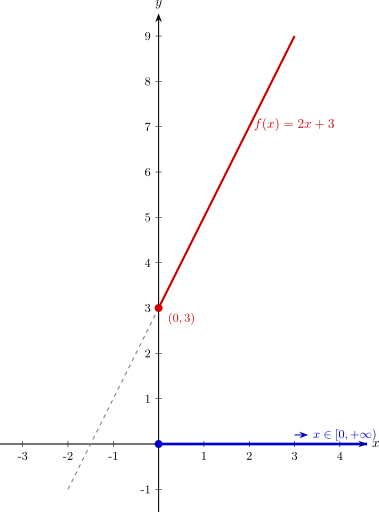
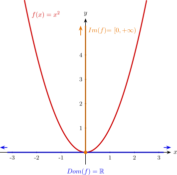
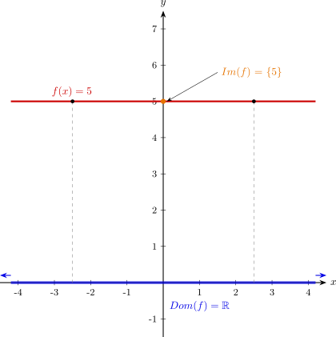

Concepte de funció. Domini i recorregut.
1. Concepte de funció entre dos conjunts
Una funció \(f\) és una relació entre un conjunt de partida \(A\) i un conjunt d'arribada \(B\). La característica fonamental és que a cada element \(x\) del conjunt \(A\) se li fa correspondre un únic valor \(y\) del conjunt \(B\).
Simbòlicament, s'expressa d'aquesta manera:
Exemple de funció:
Considerem el conjunt \(A\) com un grup de països i el conjunt \(B\) com les ciutats del món. La correspondència \(c\), que assigna a cada país la seva capital, és una funció perquè a cada país li correspon una única ciutat capital.
\[\begin{array}{} c: A & \longrightarrow & B \\ França & \longmapsto & París\\ Itàlia & \longmapsto & Roma \end{array}\]Exemple de correspondència que no és funció:
Si el conjunt \(A\) són les persones d'una població i el conjunt \(B\) són tots els els números de telèfon de la gent d'aquella població, la relació que assigna a cada persona de la població els seus números de telèfon no és un funció, ja que una persona pot tenir més d'un número de telèfon.
2. Funcions reals de variable real
En aquest curs d'anàlisi, treballarem amb funcions on, tant el conjunt de partida, com el d'arribada són els nombres reals (\(\mathbb{R}\)). En aquests casos, diem que són funcions reals de variable real. En les funcions distingim:
- Variable independent (\(x\)): És el valor d'entrada del conjunt de partida. Se li diu independent perquè li podem assignar qualsevol valor (dins d'unes limitacions que en direm domini).
- Variable dependent (\(y\)): És el valor de sortida. Se li diu dependent perquè el seu resultat "depèn" directament del valor que hagi pres la \(x\) a través de l'expressió de la funció: \(y = f(x)\).
Exemple:
Imaginem una tarifa de taxi on el preu base per pujar al vehicle és de 3 € i cada quilòmetre recorregut costa 2 €. La funció que defineix el cost total (\(y\)) segons els quilòmetres (\(x\)) és:
\[ \begin{array}{r @{\; \;} c @{\; \;} l} f: \mathbb{R} & \longrightarrow & \mathbb{R} \\ x & \longmapsto & y=2x+3 \end{array} \]On \(x\) són els quilòmetres (variable independent) i \(f(x)\) és el preu final (variable dependent).
La manera que farem servir per expressar una funció serà mitjançant la seva expressió analítica:
\[f(x) = 2x + 3\]A banda de l'expressió analítica, també representem les funcions gràficament en un sistema de coordenades cartesianes, on cada punt de la funció es representa amb les coordenades \((x,f(x))\). L'eix \(X\) representa tots els valors que pot prendre la variable independent \(x\), i a l'eix \(Y\) representem els valors que resulten d'aplicar la funció \(f(x)\), o sigui, la variable dependent.
La funció \(f(x)=2x+3\) és coneguda, ja que és l'equació explícita d'una recta. A més, hem ressaltat la part de la funció que té sentit en el context del problema (\(x\geq0\)). Com veurem a continuació, això és el domini de la funció.
3. Domini de la funció
Si ens fixem en l'exemple anterior, l'expressió \(2x+3\) està definida matemàticament per a qualsevol valor d'\(x\), però si ho posem en el context del càlcul de la tarifa del taxi, el valor \(x\) representa quilòmetres recorreguts i per tant no té cap sentit que \(x\) prengui valors negatius. En aquest context el domini d'aquesta funció son els valors d'\(x \in [0,+\infty)\).
El domini d'una funció \(f\), que expressarem com \(Dom(f)\), és el subconjunt de nombres reals per als quals la funció està definida, és a dir, els valors d'\(x\) per als quals puc calcular \(f(x)\):
Per calcular el domini cal tenir en compte:
- Denominadors: Cal comprovar que no siguin mai zero (caldrà resoldre una equació).
- Arrels d'índex parell: Cal comprovar que l'interior sigui \(\geq 0\) (caldrà resoldre una inequació).
- Logaritmes: Cal comprovar que l'argument sigui \(> 0\) (caldrà resoldre una inequació).
- Context del problema: Si la nostra funció està enmarcada en un context real, a banda del que s'ha descrit anteriorment, cal tenir en compte quan té sentit el valor d'\(x\) en funció del context.
Exemples de domini:
1. \(f(x) = \displaystyle\frac{5}{x-4} \implies\) Com que s'ha de complir que \(x-4 \neq 0\), el domini és \(Dom(f) = \mathbb{R} \setminus \{4\}\).
2. \(f(x) = \sqrt{x-1} \implies\) Com que cal que \(x-1 \geq 0\), per tant \(Dom(f) = [1, +\infty)\).
3. \(f(x)=2x+3\), no té denominadors, ni arrels ni logaritmes, per tant, matemàticament tenim \(Dom(f) =\mathbb{R}\). Ara bé, en el context de l'exemple de l'apartat anterior tenim que \(Dom(f) =[0,+\infty)\)
4. Recorregut o Imatge
El recorregut o imatge d'una funció \(f\), representat per \(Im(f)\), és el conjunt de valors que realment pren la variable dependent \(y\). O sigui, una funció està definida per als valors del seu domini i pren tots els valors del seu recorregut:
Si el domini es mira en l'eix horitzontal (\(X\)), el recorregut es visualitza en l'eix vertical (\(Y\)).
Exemples:
1. \(f(x) = x^2 \implies\) Com que \(x^2\) sempre és positiu o zero, el valor mínim de la funció serà 0. El recorregut és \(Im(f) = [0, +\infty)\).
Observem el domini i del recorregut de la funció en la seva representació gràfica:
2. \(f(x) = 5\) (funció constant que sempre val 5) \(\implies\) L'únic valor que pren la \(y\) és el 5, per tant, \(Im(f) = \{5\}\).
Observeu el domini i el recorregut en la representació gràfica: